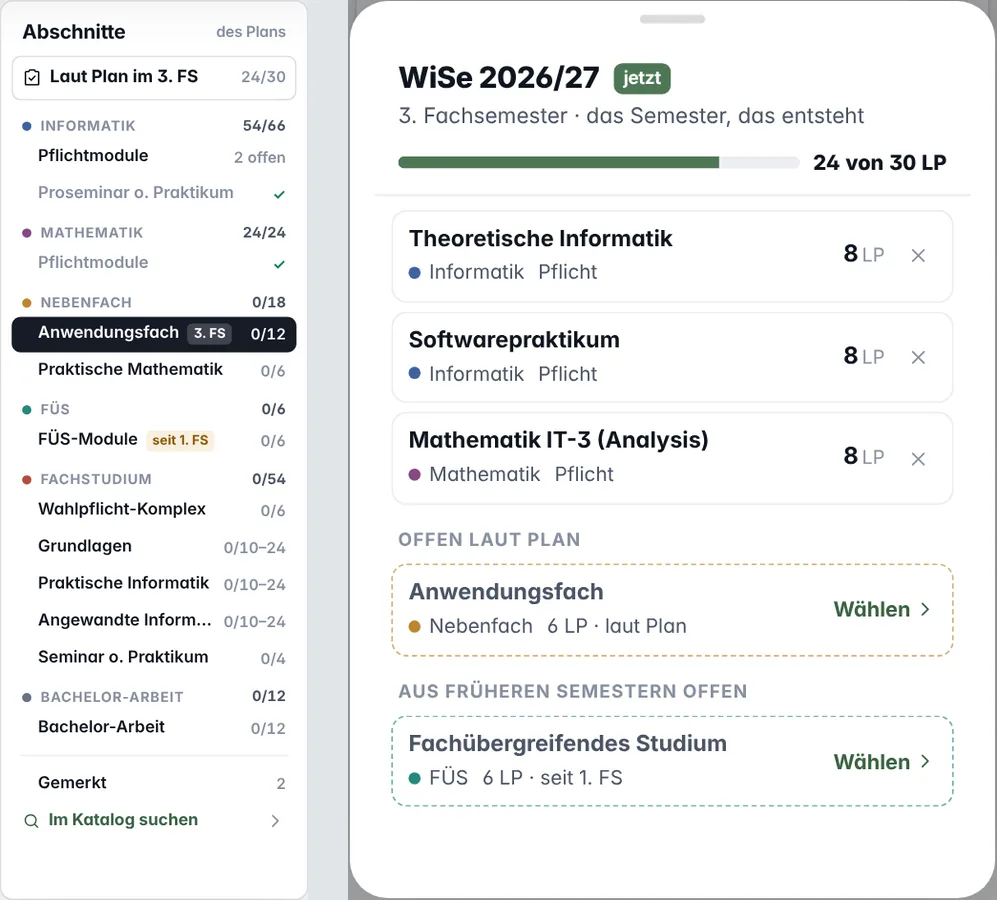
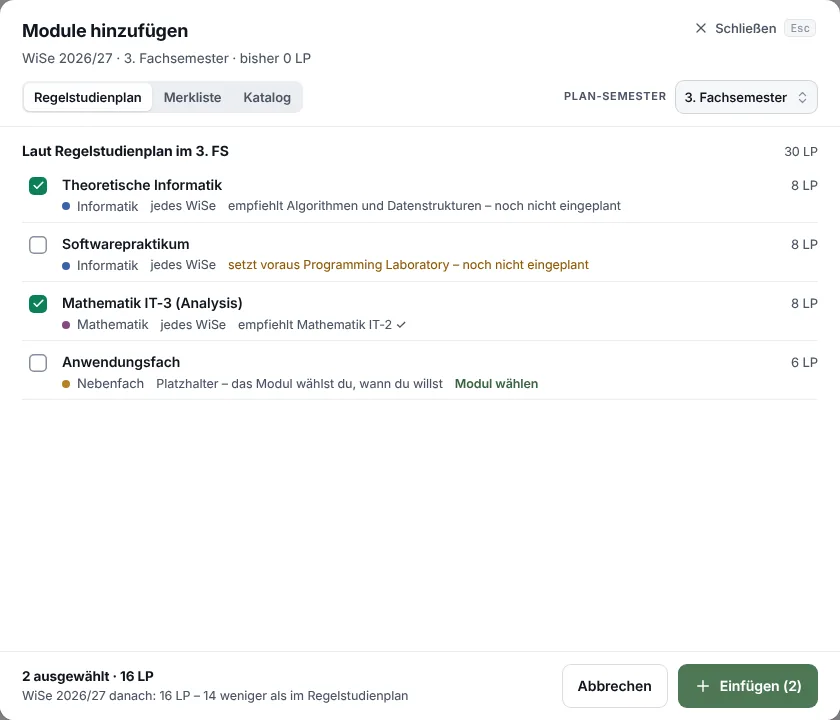
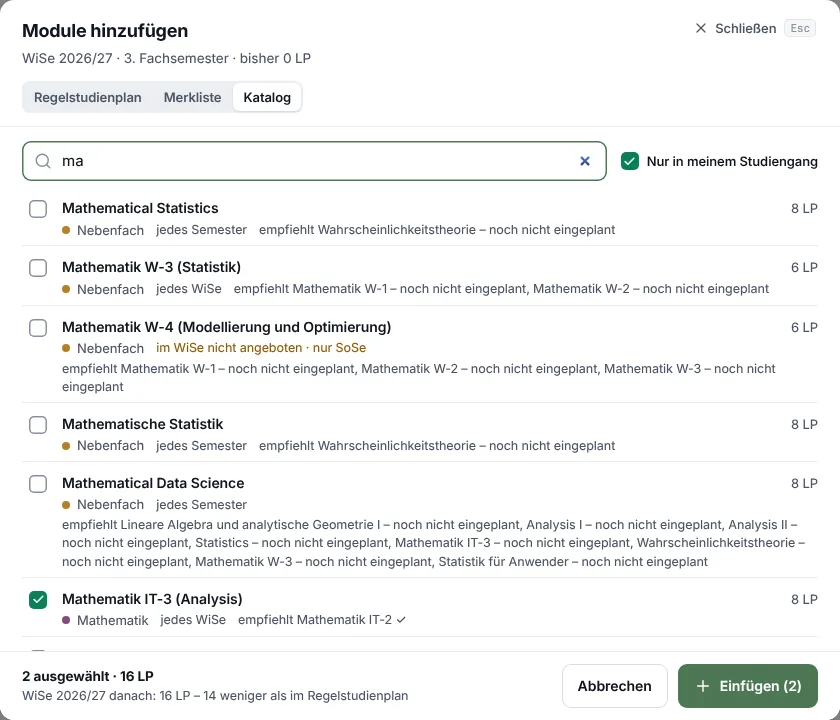
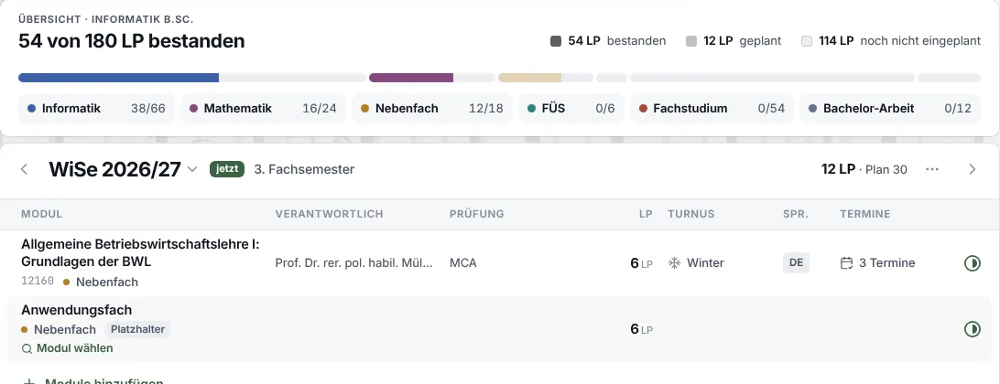
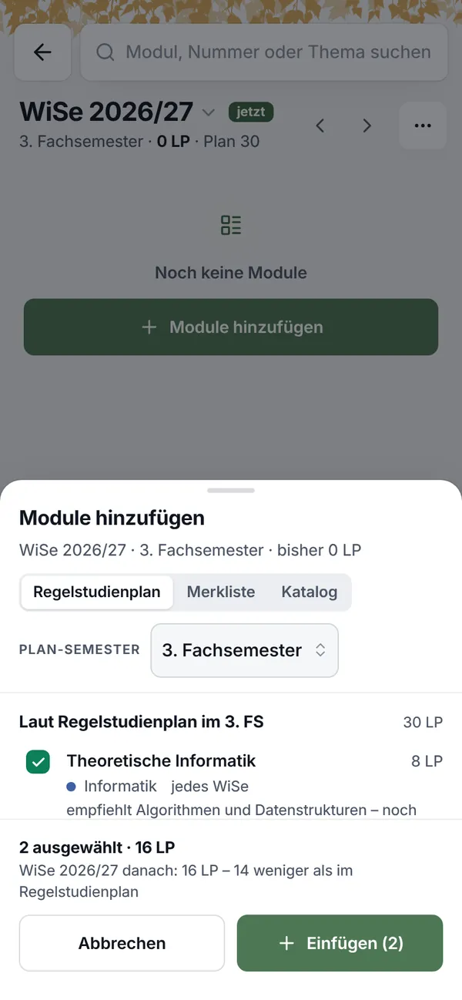
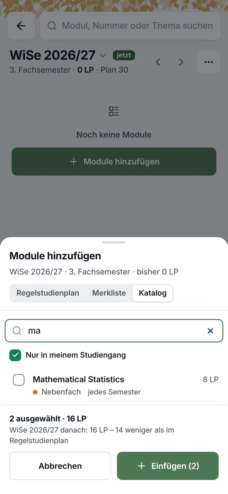

Planen nach Bereichen, suchen im Katalog
Die Werkbank bleibt ein Modus für ein Semester. Links stehen jetzt nur noch die Bereiche des Plans, wie im Überblick; ein Klick klappt einen Bereich mit seinen Untergruppen auf (Nebenfach: Anwendungsfach, Praktische Mathematik) und zeigt gleich die Module der Untergruppe, die jetzt dran ist. Das Semester rechts und am Handy zeigt nur noch, was du belegst. Was viele Filter braucht, läuft weiter über den Modulkatalog mit der Werkbank als Ziel. Ein Prototyp am Rechner und am Handy, in zehn Schritten, auf den Daten von canary: Informatik B.Sc. im 3. FS.
„Hmm grundidee ist schon ganz gut. Aber das ist super unruhig. Das muss nochmal angepasst werden. Mach das mal so, dass da die Bereicht sind, die man auswählen kann und sich dann ausklappt mit den untergruppen, wenn es gibt. Das handy menu, wo man das aktuelle semester sehen kann muss auch nochmal angepasst werden, Da sollte nur zu sehen sein, was man alles belegt hat. Der rest ist ja dann bei anderen sachen zu sehen.“
- C ist der Rahmen: Planen ist ein Modus.
An für sich finde ich es gut, dass wir mit modi arbeiten.
- Abschnitte des Plans statt Platzhalter.
wenn man sections auswählen könnte, wie pflicht, das anwengungsfach etc, und man dann die module sehen kann, die da rein passen
- Zuerst die Empfehlung des Regelstudienplans, schnell übernommen.
Man soll sehen können, was der regelstudienplan empfiehlt und schnell dandach planen können.
- Einfaches in der Werkbank, Schweres im Katalog (A).
wenn man sehr komplexe filter/suchen hat. Dann soll das über den Modulkatalog/Suche laufen
- Links die Bereiche, aufklappbar mit ihren Untergruppen.
dass da die Bereicht sind, die man auswählen kann und sich dann ausklappt mit den untergruppen, wenn es gibt
- Das Semester zeigt nur, was belegt ist.
Da sollte nur zu sehen sein, was man alles belegt hat. Der rest ist ja dann bei anderen sachen zu sehen.
- So bauen, mit den Vorschlägen der Fragen.
Passt so, bau das jetzt in Folia
- Gebaut: der Modus mit seiner Leiste, die Bereiche mit ihren Untergruppen, „Laut Plan im 3. FS“ mit „Plan übernehmen“, die Untergruppe mit „Fach“, „Im WiSe angeboten“, „Passt in meine Woche“ und Suche, „+ Einplanen“ sofort, das Modul zählt für die Untergruppe, aus der es kam („Zählt für ›“ im Menü ändert es), „Vormerken“, „Gemerkt“, das Semester nur mit dem, was belegt ist, am Handy die Bereiche und das Semester als Sheets und die Leiste über der Tab-Leiste; der Katalog mit der Werkbank als Ziel; die Wege aus Gesamtplan, Regelstudienplan, Wahlpflicht und Platzhalter.
- Noch nicht: der Katalog mit Ziel steht im Reiter „Module“, nicht „Studium“; die Treffer der Suche oben haben kein eigenes „+ Einplanen“ (das Modul, das sie öffnen, plant aber ins Semester der Werkbank); „Für Anwendungsfach zählen lassen“ im Katalog ohne Modus; die Taste P an einer Zeile; „für Anwendungsfach“ an den Zeilen des Semesters außerhalb der Werkbank.
- Ein Kopf mit Balken statt der Leiste mit „Fertig“. „Hinzufügen zu ‹ WiSe 2026/27 ›“ und das Fachsemester, rechts „22 von 30 LP“ über dem Balken des Semesters: jedes Modul ein Stück in der Farbe seines Bereichs, ein Platzhalter schraffiert, der Rest des Plans grau. × beendet den Modus, wie Esc.
Mach das am Rechner bei der Werkbank auch so. Also mit ähnlichen konzepten.
- Links der Baum, aufgeklappt. Jeder Bereich mit seinen Untergruppen, jede mit Zahl und Balken; ein Klick führt direkt in ihre Liste. Die „Wahlpflicht“ aus den drei Komplexen des Fachstudiums steht nicht darin.
- In der Mitte die Zeilen des Handys. Ein Modul mit „+ 8 LP“ rechts in der Mitte, eine Wahl gestrichelt mit Balken; „Aus dem 4. FS vorziehen“ gleich darunter statt zugeklappt. Was eingeplant ist, steht rechts im Semester, nicht mehr in der Mitte.
- Die Liste einer Wahl. Im Kopf Zahl und Balken, darunter Suche und Chips: „Alle 5 Fächer“, „Im WiSe angeboten“, „Passt in meine Woche“. Am Ende „Im Katalog suchen“ und „Vormerken“.
Am Rechner: vorher und nachher
Lokal auf den Daten von canary, 1440 × 900: Informatik B.Sc., WiSe 2026/27 im 3. FS, die ersten beiden Semester bestanden; jeweils „Laut Plan im 3. FS“ und das Anwendungsfach nach „+“.
![Zwei Bildschirme der Werkbank von Folia 1.74.1 am Rechner. Oben die Leiste „Planen ‹ WiSe 2026/27 › … 0 von 30 LP“ mit dem grünen Knopf „Fertig“. Links die Bereiche als Liste, Nebenfach aufgeklappt; in der Mitte „Laut Regelstudienplan im 3. FS“ mit den Überschriften „Pflicht“, „Wahlpflicht“ und „Noch offen aus früheren Semestern“, Zeilen mit „passt“, LP und „+ Einplanen“ in eigenen Spalten, „Wählen ›“ an den Wahlen; „Aus dem 4. FS vorziehen“ zugeklappt. Rechts das Semester mit eigenem Balken. Im zweiten Bild das Anwendungsfach mit „Fach“, einer Auswahl, zwei Kästchen und der Suche.](bilder/rechner-vorher.webp)

Was die dritte Runde ändert
Die Ordnung der zweiten Runde bleibt; was sie unruhig machte, geht: die Überschriften jedes Bereichs mit allen Untergruppen darunter, die farbigen Marken und im Semester die gestrichelten Zeilen dessen, was noch fehlt. Offen ist immer nur ein Bereich.

super unruhig
Eine Zeile je Bereich, eine Zahl je Zeile. Die sechs Bereiche des Überblicks mit ihrem Punkt in der Farbe des Bereichs und ihren LP; keine Überschriften in Großbuchstaben, keine Marken. Was jetzt dran ist, steht unter „Laut Plan im 3. FS“.die Bereicht … die man auswählen kann und sich dann ausklappt mit den untergruppen, wenn es gibt
Ein Klick klappt einen Bereich auf (ein Pfeil zeigt, dass er Untergruppen hat) und zeigt gleich die Untergruppe, die jetzt dran ist, sonst die erste offene. Es ist immer nur ein Bereich offen. FÜS, Bachelor-Arbeit und Mathematik haben keine Untergruppen und zeigen ihre Module direkt.Da sollte nur zu sehen sein, was man alles belegt hat
Das Semester zeigt nur, was belegt ist, mit seinen LP. Die gestrichelten Zeilen „offen laut Plan“ und „aus früheren Semestern offen“ sind weg, am Handy und am Rechner; dasselbe steht unter „Laut Plan im 3. FS“.
Der Prototyp
Lena studiert Informatik B.Sc. (PO 2008) im 3. FS: 1. und 2. FS bestanden, das FÜS noch offen. Sie plant das WiSe 2026/27. Die Knöpfe im Prototyp funktionieren; oben in der Leiste springst du in jeden Schritt. Ob ein Modul in ihre Woche passt, sagt Betulas eigene Prüfung („Passt in meinen Stundenplan“) gegen Theoretische Informatik, Softwarepraktikum und Mathematik IT-3.
Die Teile im Einzelnen
Jeder Teil mit dem Knopf, der ihn bedient; Betulas eigene Tasten stehen beim Knopf.
Die Leiste des Modus
Über allem, was sie ändert: „Planen“, das Semester mit ‹ › (ein anderes Semester, ohne den Modus zu verlassen), seine LP gegen den Plan und „Fertig“ Esc. Im Katalog heißt ihr Knopf „Zurück zur Werkbank“.
Die Bereiche
Oben Laut Plan im 3. FS, darunter die sechs Bereiche des Überblicks, jeder mit seinem Punkt und seinen LP; ein Pfeil zeigt Untergruppen. Ein Klick klappt den Bereich auf und zeigt die Untergruppe, die jetzt dran ist; ein Klick auf eine andere Untergruppe zeigt deren Module. Unten Gemerkt und Im Katalog suchen. Die Reihenfolge ändert sich nie; Erledigtes trägt einen Haken.
Eine Untergruppe
Kopf mit dem Bereich, den LP und der Regel („12 LP aus einem Fach“, „laut Plan 6 LP im 3. FS“). Darunter, was die Liste ändert: Fach, Im WiSe angeboten, Passt in meine Woche, Suche. Die Liste in Gruppen: passen, treffen die Woche, ohne feste Termine. Jede Zeile + Einplanen (P), ein Klick auf sie zeigt das Modul.
Das Semester
Rechts nur, was im Semester belegt ist, jedes Modul mit der Untergruppe, für die es zählt („für Anwendungsfach“), und × zum Herausnehmen, darüber die LP gegen den Plan. Was noch fehlt, steht nicht hier, sondern unter Laut Plan im 3. FS.
Der Katalog mit Ziel
Im Katalog suchen › in einer Untergruppe, unten in den Bereichen oder die Suche oben öffnen den Modulkatalog im Reiter „Studium“: alle Filter, die Vorschau, die Tasten. Seine Leiste sagt das Ziel („Planen · WiSe 2026/27 · für Fachübergreifendes Studium“), jede Zeile hat + Einplanen.
Am Handy
Oben der Bereich als ein Knopf über der Liste: ein Sheet mit denselben Bereichen, ein Tipp klappt einen auf, ein Tipp auf die Untergruppe zeigt ihre Module. Unten statt der Tab-Leiste die Leiste des Modus: Semester und LP, ein Tipp zeigt, was belegt ist, und Fertig.
Platzhalter, neu gedacht
Ein Platzhalter ist heute eine gespeicherte Zeile ohne Modul. Man legt ihn an, sucht später ein Modul, und erst wenn das ihn füllt, zählt nichts doppelt (seit Folia 1.59.2 tut es das über „Modul wählen“). In der Werkbank wählt man nie für einen Platzhalter, sondern in einer Untergruppe.
Bis Folia 1.59.1
- Anlegen: „Module hinzufügen“, „Anwendungsfach“ ankreuzen, „Einfügen“.
- Füllen: „Modul wählen“ springt in den Katalog, „Einplanen“ plant ins Semester der Sitzung.
- Und dann: beides stand im Semester, Nebenfach zählte 12 statt 6 LP. Seit 1.59.2 gibt „Modul wählen“ den Platz mit und das Modul füllt ihn; man muss den Platzhalter aber weiter erst anlegen und dann füllen.
In der Werkbank
- Nichts anlegen: was der Plan im Fachsemester vorsieht, steht unter „Laut Plan im 3. FS“, jede Wahl mit „Wählen ›“; gespeichert wird davon nichts.
- In der Untergruppe wählen: „Wählen ›“ oder ein Klick auf den Bereich öffnet sie; „+ Einplanen“ plant ins Semester der Werkbank und merkt sich die Untergruppe am Modul.
- Gespeicherte Platzhalter bleiben gültig (alte Pläne, „Bisherige Module als bestanden markieren“, der Stundenplan): unter „Laut Plan“ stehen sie als „vorgemerkt“, und was man in ihrer Untergruppe für ihr Semester einplant, füllt sie. „Modul wählen“ an einem Platzhalter öffnet die Werkbank in seiner Untergruppe.
- Vorplanen ohne Modul bleibt möglich, etwa 10 LP Praktische Informatik im WiSe 27/28: „Vormerken“ im Kopf einer Untergruppe.
Was in die Werkbank gehört, was in den Katalog
Die Grenze zieht die Liste: eine Untergruppe hat im Median 17 Module, im WiSe 9; das liest man. Das FÜS hat 117, der Katalog 3.232; dort braucht es Filter.
| Wer will … | geht in | mit |
|---|---|---|
| übernehmen, was der Plan sagt | Werkbank · Laut Plan | „Plan übernehmen“, ein Klick für die Pflicht; „Wählen ›“ für jede Wahl |
| aus einer Wahl wählen (Anwendungsfach, Komplex, Seminar) | Werkbank · Bereich, Untergruppe | Fach, Im WiSe, Passt, Suche; die passenden vorn |
| wiederholen oder nachholen | Werkbank · Laut Plan | „Noch offen aus früheren Semestern“ |
| vorziehen aus einem späteren Semester | Werkbank · Laut Plan oder der Bereich | „Aus dem 4. FS vorziehen“, aufgeklappt |
| das FÜS nach Zeit oder Namen | Werkbank · FÜS | Passt, Suche |
| nach Sprache, Prüfungsform, LP, Lehrform … | Katalog mit Ziel | „Im Katalog suchen ›“; alle Filter, Vorschau, Tasten |
| ein bestimmtes Modul (Name, Nummer) | die Suche oben | plant im Modus ins Semester der Werkbank |
| stöbern, was noch passt | Katalog mit Ziel | „Im Katalog suchen“ unten in den Bereichen: das Semester als Ziel |
| aus der Merkliste | Werkbank · Gemerkt | jede Zeile mit der Untergruppe, für die sie zählt |
Was aus den heutigen Wegen wird: „Module hinzufügen“ öffnet die Werkbank, der Dialog mit drei Reitern geht und mit ihm sein Katalog. Die Zelle des Gesamtplans öffnet die Werkbank für ihr Semester, in ihrem Bereich. „Wählen ›“ im Regelstudienplan und „Modul wählen“ an einem Platzhalter öffnen die Werkbank in der Untergruppe. Die Ansicht „Wahlpflicht“ bleibt der Überblick über alle Wahlen; „Planen ›“ an einer Wahl öffnet die Werkbank dort. „Einplanen“ im Modulkatalog ohne Modus bleibt, wie es ist; zählt das Modul für eine offene Untergruppe, bietet seine Notiz „Für Anwendungsfach zählen lassen“ an.
Fragen der dritten Runde
Jede mit einem Vorschlag; ein „passt“ reicht.
Ein Klick auf einen Bereich mit Untergruppen zeigt gleich eine?Oder erst nur aufklappen, und man wählt die Untergruppe selbst.
Vorschlag: ja, die, die jetzt dran ist (Nebenfach: Anwendungsfach), sonst die erste offene. Am Handy klappt ein Tipp nur auf, weil das Sheet dabei offen bleibt.
Plant „+ Einplanen“ sofort?Heute kreuzt man an und drückt „Einfügen“.
Vorschlag: ja, wie „Einplanen“ überall sonst, auch „Plan übernehmen“; jede Änderung mit „Rückgängig“, die Leiste zählt mit.
Was der Plan noch erwartet, nur unter „Laut Plan“, nicht mehr im Semester?Gespeicherte Platzhalter bleiben gültig, neue legt man nur über „Vormerken“ an.
Vorschlag: ja, am Rechner wie am Handy; das Semester zeigt nur, was belegt ist, „Laut Plan im 3. FS“ alles, was fehlt.
Ein Modul, das in zwei Untergruppen zählen kann?Mathematische Statistik steht in Praktische Mathematik und im Anwendungsfach.
Vorschlag: es zählt in der Untergruppe, aus der es eingeplant wurde; Betula merkt sich das am Modul, „Zählt für ›“ in seinem Menü ändert es.
Plant die Suche oben im Modus ins Semester der Werkbank?
Vorschlag: ja: solange der Modus offen ist, haben ihre Treffer „+ Einplanen“; ohne Modus bleibt sie, wie sie ist.
Der Katalog mit Ziel: im Reiter „Studium“, mit „Zurück zur Werkbank“?
Vorschlag: ja. Der Modus bleibt offen, bis man „Fertig“ drückt; der Reiter „Module“ bleibt der Katalog ohne Ziel.
Am Handy: deckt die Leiste des Modus die Tab-Leiste ab?Wie die Leiste der Auswahl in „Mein Studium“.
Vorschlag: ja; „Fertig“ gibt die Tab-Leiste zurück.
Die Analyse der ersten Runde
Was heute passiert
Sechs Wege führen heute zu einem Modul im Semester. Jeder hat seine eigene Liste, und keine davon ist der Modulkatalog.
- „Module hinzufügen“ am Semester. Drei Reiter: Regelstudienplan (die Zeilen eines Fachsemesters, das Passende vorab angekreuzt, darunter die Wiederholer), Merkliste, Katalog (ein Suchfeld und ein Haken). Ankreuzen, „Einfügen“.
- „Modul hinzufügen“ in einer Zelle des Gesamtplans. Die Module eines Bereichs für ein Semester, die Unterbereiche als Knöpfe, eine Suche, bis zu 200 Treffer.
- Die Ansicht „Regelstudienplan“. „Einplanen“ an jeder Zeile mit Modul; „Wählen ›“ an jedem Platz führt in die Wahlpflicht.
- Die Ansicht „Wahlpflicht“. Die Listen eines Platzes als Tabelle, „+ In WiSe 26/27“ an jedem Modul, ohne Suche, ohne Filter, ohne Woche.
- „Modul wählen“ an einem Platzhalter. Springt in den Modulkatalog, in den Reiter „Module“. Das Semester und der Platz bleiben zurück.
- „Einplanen“ im Modulkatalog. Plant ins Semester der Sitzung, nicht in das, von dem man kam, und füllt keinen Platz.





Was heute schiefgeht, egal welches Konzept es wird
- Ein gewähltes Modul füllt den Platz nicht. „Modul wählen“ gibt dem Katalog weder den Platz noch das Semester mit:
find_hrefinplanner/src/study/focus.rssetzt keinfill=. Der Katalog kann es längst, die Suche des Stundenplans gibt es ihm mit. So zählen Modul und Platzhalter beide. Behoben in Folia 1.59.2: „Modul wählen“ gibt den Platz mit, das Modul füllt ihn. - Ein leerer Katalog. 106 Plätze in 15 Studiengängen (Bauingenieurwesen B.Sc., Angewandte Naturwissenschaften, Control of Renewable Energy Systems …) führen zu „Wahlpflichtmodule des Studiengangs“, und das findet kein Modul: ihr Modulbaum nennt keine Modulart. Behoben in Folia 1.59.1: wo keine Quelle ein Wahlpflichtmodul nennt, führen sie zu „Module des Studiengangs ohne Pflichtmodule“, 8 bis 136 Module je Platz, und wo der Baum nur Pflicht hält, zum ganzen Curriculum (
variants::row_query). - Ins Semester der Sitzung. Was man über „Modul wählen“ im Katalog einplant, landet im Semester, für das die Sitzung plant; ab dem 15. November ist das das SoSe 27, auch wenn man vom WiSe 26/27 kam. Behoben mit 1.59.2: mit dem Platz kommt sein Semester.
- Ein Platz aus einem früheren Semester ist unsichtbar. Das FÜS (laut Plan 1. FS), nie eingeplant, steht in „Module hinzufügen“ fürs 3. FS nirgends; nur wer „Plan-Semester: 1“ wählt, sieht es.
Wofür Studierende „Module hinzufügen“ brauchen
Acht Aufgaben, nach dem, was ein Semester verlangt. Die erste und die vierte erledigt der Dialog heute gut; an der zweiten, dem Füllen eines Platzes, hängt das meiste, und dort bricht er.
| Aufgabe | Wie oft, wie viel | Heute |
|---|---|---|
| 1 · Den Regelstudienplan übernehmen. Die Pflichtmodule des Fachsemesters ins Semester. | jedes Semester, 3 bis 6 Module; 65 % der LP eines Plans nennen ihr Modul | gut Reiter „Regelstudienplan“, vorab angekreuzt. |
| 2 · Einen Platz füllen. „Anwendungsfach“, „Komplex Praktische Informatik“, „Seminar oder Praktikum“: ein Modul aus einer Liste wählen, das im Semester angeboten wird und in die Woche passt. | im Median 4 Plätze je Plan, 23 % der LP; 17 Module je Platz | bricht „Modul wählen“ verlässt „Mein Studium“; das Modul füllt den Platz nicht, beides zählt. |
| 3 · Das FÜS wählen. Ein Modul aus der FÜS-Liste, nach Sprache, Zeit, Thema. | 137 Plätze, je rund 129 Module | versteckt Mit dem Haken findet die Suche keins; ohne ihn sucht sie in allen 3.232. |
| 4 · Wiederholen. Was nicht bestanden ist, wieder einplanen. | nach jedem Semester mit „nicht bestanden“ | gut Abschnitt „Wiederholer“ und „Einplanen“ an der Zeile. |
| 5 · Vorziehen oder nachholen. Ein Modul eines anderen Fachsemesters. | gelegentlich | versteckt „Plan-Semester“ zeigt ein anderes FS; ein offener Platz eines früheren FS erscheint sonst nirgends. |
| 6 · Ein bestimmtes Modul. „Datenbanken“, „12345“. | oft | mühsam Erst ab zwei Buchstaben; „Datenbnken“ findet nichts, im Katalog 4 Module. |
| 7 · Stöbern. Was passt in dieses Semester, was zählt noch? | vor jedem Semester | geht nicht Der Dialog zeigt nichts ohne Suche; der Katalog kennt das Semester nicht. |
| 8 · Aus der Merkliste. | wer merkt | gut Reiter „Merkliste“, nach Sammlung. |
Was die Regelstudienpläne verlangen
Alle 182 Regelstudienpläne der 129 aktuellen Studiengänge (Datenstand 01.11.2026), gezählt mit Betulas eigenen Funktionen (folia/crates/pages/examples/place_survey.rs). Ein Platz ist eine Zeile, die kein Modul nennt; „Modul wählen“ führt zu ihrer Liste (variants::row_query).
der Leistungspunkte stehen auf Plätzen, für die man wählt (23 % Wahlpflicht, 3 % FÜS). Je Plan im Median 22 %, im Master 40 % und mehr.
Plätze je Plan im Median; die Hälfte der Pläne hat 2 bis 6, einer 25.
Module je Wahlpflicht-Platz im Median (die Hälfte 4 bis 38), davon 9 im WiSe angeboten.
Module je FÜS-Platz im Median: die FÜS-Liste des Studiengangs. Ohne Suche und Filter liest das niemand.
Module des Anwendungsfachs, die das WiSe anbietet, passen neben Theoretische Informatik, Softwarepraktikum und Mathematik IT-3; 23 treffen eine ihrer Vorlesungen oder Übungen.
Plätze in 15 Studiengängen, an denen „Modul wählen“ in einen leeren Katalog führt.
715 Wahlpflicht-Plätze nach der Zahl ihrer Module
Bis etwa 30 Module ist ein Platz eine Liste, die man liest: dafür taugt eine eigene, kleine Ansicht, die nach „angeboten“ und „passt“ ordnet. Ein Drittel der Plätze bietet mehr, das FÜS fast immer über 100: dort braucht es den Katalog mit Suche, Filtern und Vorschau. Und 15 % finden heute gar nichts. Die Zahlen sagen also nicht „Liste oder Katalog“, sondern: beides, mit demselben Ziel. Daraus folgt die Grenze der zweiten Runde: Listen eines Abschnitts in der Werkbank, alles mit vielen Filtern im Katalog.
Nachrechnen: cargo run -p folia-pages --example place_survey -- <catalog.db> 2026W > places.tsv; eine Zeile je Zeile eines Plans, die Summen auf stderr. Ob ein Modul neben TI, SWP und MIT3 passt, ist pages::fit, die Prüfung hinter „Passt in meinen Stundenplan“.
Warum der Katalog im Dialog nicht trägt
Der Reiter „Katalog“ ist ein zweiter Katalog: ein Suchfeld, ein Haken, 40 Treffer, gebaut neben dem Modulkatalog statt mit ihm (picker.rs). Was der Katalog seither gelernt hat, hat er nicht, und was er wissen müsste, weiß er nicht.
- Nichts ohne Tippen.Stöbern geht nicht: wer wissen will, was das Anwendungsfach im Winter bietet, muss Namen kennen.Unter zwei Buchstaben: „Tippe, um zu suchen“.
- Keine Tippfehler, keine Rangfolge.Die Suche schickt den Text, wie er ist; die Korrektur und das Vorziehen des eigenen Studiengangs macht nur die Seite des Katalogs.„Datenbnken“: nichts. Im Katalog: 4 Module.
- Ein Haken, der das FÜS versteckt.„Nur in meinem Studiengang“ meint das Curriculum; die FÜS-Liste gehört nicht dazu.„English“, „Biologie“, „Kunstgeschichte“: nichts.
- Keine Filter.Kein Fach, kein „angeboten im Winter“, keine LP, keine Sprache, keine Prüfungsform, kein „Passt in meinen Stundenplan“.Der Katalog hat sie alle.
- Keine Woche.Ob ein Modul neben den Pflichtmodulen frei ist, sagt er nicht, und das entscheidet die Wahl.Anwendungsfach: 23 von 38 treffen TI, SWP oder MIT3.
- Keine Vorschau.Was ein Modul ist, wann es stattfindet, wie es geprüft wird: nur, wer den Dialog verlässt.Die Zeile hat einen Haken, keinen Weg zum Modul.
- Kein Ziel.Er weiß nicht, für welchen Platz man sucht: kein „zählt fürs Nebenfach, 0 von 18“, und ein Modul füllt keinen Platz.Die Ursache des doppelten Zählens.
- Notizen statt Ordnung.Was ein Modul empfiehlt, steht als Satz unter ihm, auch wenn es nichts entscheidet.Mathematical Data Science: neun Module in drei Zeilen.
- Am Handy eine Zeile.Das Sheet halb hoch, Kopf, Reiter und Fußzeile nehmen den Rest.390 × 844: eine Zeile der Liste.
Konzept, nichts davon ist gebaut · dritte Runde 03.11.2026 · Daten und Bilder von canary, 01.11.2026 (Folia 1.58.2)